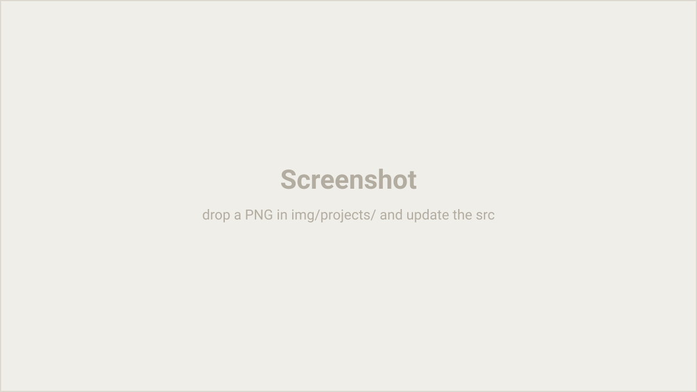

Change-Tracking Bot
A Telegram bot that snapshot-diffs a paginated third-party API and alerts the moment the data changes.

Overview
The annoyance: wanting to know the instant some remote data changes, without sitting there refreshing it. The data lived behind a paginated third-party API, so “has anything changed?” meant walking every page and comparing it to what you saw last time.
What I built
The bot walks the paginated API, snapshots each page, and diffs it against the last known state held in a thread-safe SQLite store. When it detects a delta it pushes an alert to Telegram. Pagination-aware retry/backoff keeps it stable when the upstream is slow or flaky, and the core is covered by 41 unit tests across 8 modules.
Highlights
- Thread-safe SQLite persistence of the last-seen state.
- Retry/backoff that understands the API's pagination.
- 41 unit tests across 8 modules.